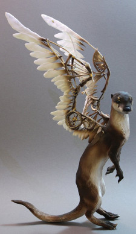
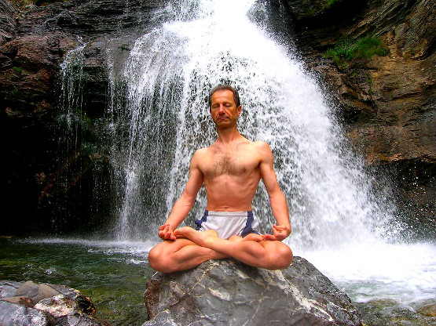
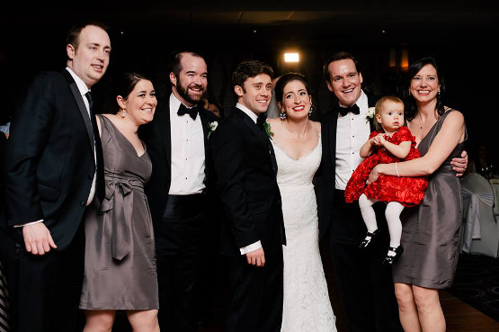

DBC Otters 2014 | John Norton
Something I love and something quirky about myself...
Yoga is something I love and is also something quirky about me in that I have gone to the extent of taking a 500 hour yoga teacher training course, but I have never been paid to teach a class, and I still have trouble getting into a lotus pose(like the guy below, in front of the waterfall).
To the right, a steampunk otter with wings - didn't know where else to put it.

OTTER 2.0???
Fun with Stock Photography
Who needs a white noise generator for meditating when you have a waterfall in your backyard?!
Looks Like It Hurts
Visual representations of how I felt after learning SQL for the first time.
Not Stock Photography
Just so there is an actual picture of me (along with my siblings and their spouses), I've included this one from my sister's wedding. I'm the one with the beard and I love all these people too.
Stuff I Still Have To Work On!
Email us: john@norton.io
When I have time and finally get around to setting all my social media outlets up, these links should work!


© 2014 John J. Norton. All Rights Reserved.